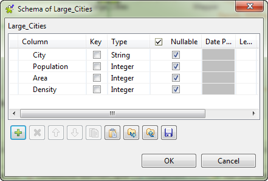
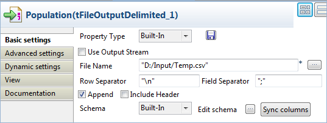
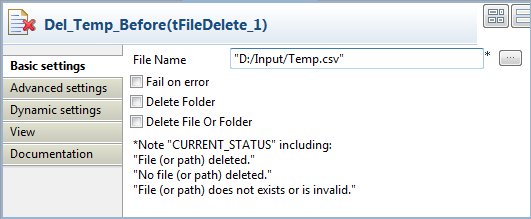

|
Famille du composant |
Business Intelligence/Charts | |
|
Fonction |
Le composant tBarChart lit des données à partir d’un flux d’entrée et transforme les données en diagramme en barres dans un fichier image au format PNG. | |
|
Objectif |
Le composant tBarChart génère un diagramme en barres à partir des données d’entrée afin de faciliter l’analyse technique. | |
|
Basic settings |
Schema et Edit schema |
Un schéma est une description de lignes, il définit le nombre de champs qui sont traités et passés au composant suivant. Le schéma est soit local (Built-in) soit distant dans le Repository. NoteLe schéma du tBarChart contient trois colonnes en lecture seule nommées respectivement series (type String), category (type String), et value (type Integer), selon un ordre prédéterminé. Les données de toutes les autres colonnes seront simplement passées au composant suivant, s’il y en a un, mais elles ne seront pas présentes dans le diagramme en barres. |
|
|
|
Built-in : Le schéma est créé et conservé pour ce composant seulement. Voir également le Guide Utilisateur de Talend Open Studio. |
|
|
|
Repository : Le schéma existe déjà et est stocké dans le Repository. Ainsi, il peut être réutilisé. Voir également le Guide utilisateur de Talend Open Studio. |
|
|
Sync columns |
Permet de synchroniser le schéma du fichier d’entrée avec le schéma du fichier de sortie. La fonction Sync ne s’affiche que lorsqu’une connexion de type Row est connectée au composant de sortie. |
|
|
Generated image path |
Nom et chemin d’accès du fichier image de sortie. |
|
|
Chart title |
Saisissez le titre du diagramme en barres à générer. |
|
|
Include legend |
Cochez cette case si vous souhaitez inclure une légende à votre diagramme en barres, afin d’afficher toutes les séries (series) dans des couleurs différentes. |
|
|
3Dimensions |
Cochez cette case afin de créer une image en trois dimensions. Par défaut, cette case est cochée et les barres représentant les séries (series) de chaque catégorie (category) sont empilées les unes sur les autres. Si cette case est décochée, une image en deux dimensions est créée, et les barres s’affichent les unes à côté des autres le long de l’axe category. |
|
|
Image width et Image height |
Saisissez la largeur et la hauteur du fichier image, exprimées en pixels. |
|
|
Category axis name et Value axis name |
Saisissez le nom de l’axe category et le nom de l’axe value. |
|
|
Foreground alpha |
Saisissez un entier entre 0 et 100 afin de définir la transparence de l’image. Plus ce nombre est petit, plus votre image sera transparente. |
|
|
Plot orientation |
Choisissez l’orientation qu’aura votre diagramme en barres: VERTICAL ou HORIZONTAL. |
|
Advanced settings |
tStatCatcher Statistics |
Cochez cette case pour collecter les données de log au niveau du composant. |
|
Utilisation |
Ce composant est un composant de sortie. Par conséquent, il requiert un composant d’entrée ainsi qu’une connexion de type Row Main. | |
Ce scénario décrit un Job simple qui lit les données d’un fichier CSV et les transforme en diagramme en barres. Le fichier d’entrée est présenté ci-dessous :
City;Population(x1000);LandArea(km2);PopulationDensity(people/km2) Beijing;10233;1418;7620 Moscow;10452;1081;9644 Seoul;10422;605;17215 Tokyo;8731;617;14151 Jakarta;8490;664;12738 New York;8310;789;10452
Le fichier d’entrée ayant une structure différente de celle requise pour l’utilisation d’un tBarChart, un tMap sera utilisé dans ce scénario, afin de mettre en correspondance les données avec un fichier CSV à trois colonnes, avant d’utiliser le tBarChart pour générer un fichier représentant le diagramme en barres.
Note
Le tMap est généralement utilisé afin d’adapter le schéma d’entrée conformément à la structure du schéma du composant tBarChart. Pour plus d’informations concernant le composant tMap, consultez le Guide utilisateur de Talend Open Studio ainsi que la section intitulée « tMap ».
A partir de la Palette, déposez les composants suivants dans l’espace de modélisation graphique : deux composants tFileInputDelimited, un tMap, trois composants tFileOutputDelimited et un tBarChart. Renommez les composants comme vous le souhaitez pour faciliter le travail de conception.
Connectez le composant tPrejob à un tFileDelete à l'aide d'une connexion Trigger > On Component Ok et connectez le composant tPostjob au second tFileDelete via le même type de connexion.
Connectez le premier composant tFileInputDelimited au tMap à l'aide d'une connexion Row > Main.
Connectez le composant tMap au premier tFileOutputDelimited à l'aide d'une connexion Row > Main et appelez-la Population.
Répétez les étapes ci-dessus pour connecter le composant tMap aux deux autres tFileOutputDelimited à l'aide d'une connexion Row > Main et appelez-les Area et Density.
Connectez le tFileInputDelimited au composant tBarChart à l'aide d'un lien Row > Main.
Connectez le premier composant tFileInputDelimited au second tFileInputDelimited en utilisant une connexion Trigger > OnSubjobOk.
Renommez les composants de façon à décrire leur fonction.
Double-cliquez sur le premier composant tFileInputDelimited afin d’afficher l’onglet Basic settings de sa vue Component.

Renseignez le chemin d’accès au fichier à traiter dans le champ File name.
Spécifiez dans le champ Header le nombre de lignes d’en-tête. Dans ce scénario, il n’y a qu’une seule ligne.
Cliquez sur Edit schema pour décrire la structure des données du fichier d’entrée. Dans ce scénario, le schéma d’entrée est composé de quatre colonnes : City, Population, Area, et Density. Une fois les noms de colonnes et les types de données définis, cliquez sur OK pour fermer la boîte de dialogue du schéma.

Double-cliquez sur le tMap pour ouvrir l’éditeur Map Editor.
Vous pouvez voir une table d'entrée dans le panneau d'entrée, row1 dans cet exemple et dans le panneau de sortie, trois tables de sortie vides appelées Population, Area et Density.
Utilisez l’éditeur Schema editor pour ajouter trois colonnes à chacune des tables de sortie : series (type String), category (type String) et value (type Integer).
Dans le champ Expression de chaque table de sortie, saisissez le texte à afficher dans la légende du graphique, dans cet exemple
"Population (x1000 people)","Land area (km2)", et"Population density (people/km2)".Déposez la colonne City de la table d’entrée dans la colonne category de chaque table de sortie.
Déposez la colonne Population de la table d’entrée dans la colonne value de la table Population.
Déposez la colonne Area de la table d’entrée dans la colonne value de la table Area.
Déposez la colonne Density de la table d’entrée dans la colonne value de la table Density.

Cliquez sur OK pour sauvegarder les mappings, fermer l’éditeur et propager les schémas de sortie aux composants de sortie.
Double-cliquez sur le premier composant tFileOutputDelimited pour ouvrir sa vue Basic settings.
Dans le champ File Name, définissez un fichier CSV dans lequel envoyer les flux de données mappés. Dans cet exemple, nommez le fichier de sortie à créer Temp.csv. Ce fichier sera utilisé comme fichier d’entrée pour le composant tBarChart.
Cochez la case Append.
Définissez les paramètres des deux autres composants tFileOutputDelimited exactement de la même manière que le premier tFileOutputDelimited.
Note
Notez que l'ordre des flux de données sortant du composant tMap n'est pas nécessairement l'ordre dans lequel les données seront écrites dans le composant cible. Pour vous assurer que le fichier est correctement généré, supprimez, s'il existe, le fichier portant le même nom avant d'exécuter le Job. Vérifiez que la case Append est cochée dans tous les composants tFileOutputDelimited afin que tous les flux de données mappés aillent dans le même fichier, sans écraser les données existantes.
Double-cliquez sur le second composant tFileInputDelimited afin d’afficher l’onglet Basic settings de sa vue Component.

Renseignez le champ File name avec le chemin d’accès au fichier, ainsi que son nom, comme défini dans chaque composant tFileOutputDelimited. Dans cet exemple, le fichier d’entrée est LargeCities_mapped.csv.
Double-cliquez sur le composant tBarChart pour afficher l’onglet Basic settings.

Dans le champ Generated image path, renseignez le chemin d’accès du fichier image à générer.
Dans le champ Chart title, saisissez un titre pour le diagramme en barres.
Saisissez un nom pour les axes category et series.
Si nécessaire, définissez la taille (la largeur dans le champ Image Width, la hauteur dans le champ Image height) et le degré de transparence de l’image (dans le champ Foreground alpha). Dans ce scénario, laissez les paramètres par défaut.
Cliquez sur Edit schema afin d’ouvrir la boîte de dialogue du schéma.

Copiez toutes les colonnes du schéma de sortie dans le schéma d’entrée en cliquant sur la double-flèche pointant vers la gauche.
Cliquez sur OK pour fermer la boîte de dialogue du schéma.
La fonction des composants tPrejob et tPostjob est de déclencher les sous-jobs connectés et n'ont pas besoin d'être configurés. Vous devez simplement définir les propriétés des deux composants tFileDelete.
Double-cliquez sur le premier composant tFileDelete pour afficher sa vue Basic settings.
Dans le champ File name, renseignez le chemin d'accès du fichier temporaire.
Note
Si la case Fail on error est cochée et que le sous-job de pré-traitement échoue à cause d'erreurs (par exemple le fichier à supprimer n'existe pas), l'échec empêche le lancement du sous-job principal. Dans cette situation, décochez la case Fail on error pour éviter cette interruption.